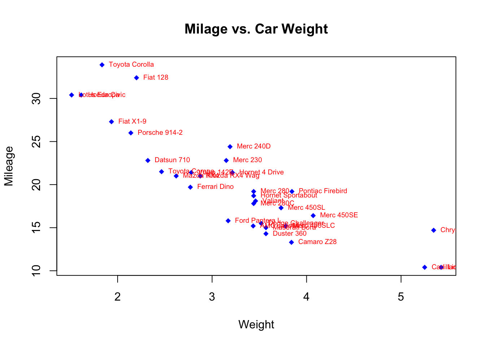

Many high level plotting functions (plot, hist, boxplot, etc.) allow you to include additional options to customise how the plot is drawn (as well as other graphical parameters). We have seen examples of these already with the axis label arguments xlab and ylab, however we can customise the following plot features for finer control of how a plot is drawn.
To control the ranges of the horizontal and vertical axes, we can add the xlim and ylim arguments to our original plotting command. To set the horixontal axis limits, we pass a vector of two numbers to represent the lower and upper limits, xlim = c(lower, upper), and repeat the same for ylim to customise the vertical axis.
plot(x=mtcars$wt, y=mtcars$mpg, xlab="Weight", ylab="MPG",
main="MPG vs Weight", xlim=c(0,6), ylim=c(0,40))Using colour in a plot can be very effective, for example to highlight different groups within the data. Colour is adjusted by setting the col optional arugment to the plotting function, and what R does with that information depends on the value we supply.
col is assigned a single value: all points on a scatterplot, all bars of a histogram, all boxplots are coloured with the new colourcol is a vector:
col is a vector of the same length as the number of data points then each data point is coloured individuallycol is a vector of the same length as the number of bars then each bar is coloured individuallycol is a vector of the same length as the number of boxplots then each boxplot is coloured individuallyNow that we know how the col argument works, we need to know how to specify colours. Again, there are a number of ways and you can mix and match as appropriate
1:8 are interpreted as colours (black, red, green, blue, …) and can be used as a quick shorthand for a common colour. Type palette() to see the sequence of colours R uses."steelblue", "darkorange". You can see the list of recognised names by typing colors(), and a document showing the actual colors is available here"#ff0000" and cyan as "#00ffff".rainbow, heat.colors, and terrain.colors and all take the number of desired colours as argument.## 3 plots in one row
par(mfrow=c(1,3))
## colour the cars data by number of gears
plot(x=mtcars$wt, y=mtcars$mpg, col=mtcars$gear, xlab="Weight", ylab="MPG",
main="MPG vs Weight")
## manually colour boxplots
boxplot(mpg~cyl, data=mtcars, col=c("orange","violet","steelblue3"),
main="Car Milage Data", xlab="Number of Cylinders",
ylab="Miles Per Gallon")
## use a colour function to shade histogram bars
hist(mtcars$mpg,col=rainbow(5))R Help: colors, palette, color functions
The symbols used for points in scatter plots can be changed by specifying a value for the argument pch {#pch} (which stands for plot character). Specifying values for pch works in the same way as col, though pch only accepts integers between 1 and 20 to represent different point types. The default is pch=1 which is a hollow circle. The possible values of pch are shown in the plot below:
When drawing plots with lines instead of points, we can customise the line style by specifying the line width and line type. Line width is specified by lwd {#lwd} (for line width) and is given a single numerical value which is interpreted as the width of the line relative to the default width of lwd=1. So, lwd=2 produces lines that are twice as wide.
Line types are specified via the lty {#lty} argument as integers corresponding to 6 different line styles shown in the plot below:
plot(1:6,axes=FALSE,ty='n',ylim=c(0,7),xlab='',ylab='',main='Line types, lty=')
abline(h=1:6,lty=1:6,lwd=2,col='forestgreen')
axis(2,at=1:6)
box()Once we have created a plot using the methods above, we often want to add additional information, such as points, lines, or a legend.
Additional points can be added to a plot using the points function. It is used in the same way as plot for drawing a scatterplot, but it can only add further points to an existing plot.
For example, we can add the sample mean values as a red star to the plot of car weight vs miles-per-gallon
plot(x=mtcars$wt, y=mtcars$mpg, col=mtcars$gear, xlab="Weight", ylab="MPG",
main="MPG vs Weight")
points(x=mean(mtcars$wt), y=mean(mtcars$mpg), col='red', pch=8)R Help: points
It is often useful to add simple straight lines to lines to plots, which can be achieved using the abline function. abline can be used in three different ways:
h argument, abline(h=3) draws a horizontal line at \(y=3\)c argument, abline(v=5) draws a vertical line at \(x=5\)a and b arguments representing the intercept and slope respectively; abline(a=1,b=2) draws the line at \(y=1+2x\)abline {#abline} can be customised using any of the colour and line modifications discussed above.
plot(x=mtcars$wt, y=mtcars$mpg, col=mtcars$gear, xlab="Weight", ylab="MPG",
main="MPG vs Weight")
points(x=mean(mtcars$wt), y=mean(mtcars$mpg), col='red', pch=8)
abline(a=37.285, b=-5.344, col='red') ## line of best fit
abline(h=mean(mtcars$mpg), col='violet', lty=3) ## horizontal line through ybarR Help: abline
We can also use R’s line drawing functions to add curves to a plot via the lines {#lines} function, which works in exactly the same way as point only drawing connected lines rather than individual points. To add a function \(f(x)\) to a plot, we must first construct a vector of \(x\) values over the range of the plot, and then evaluate the function \(f\) at each of them. We can then supply both vectors to lines as x and y and it will connect the points and draw the function on the current plot.
For example, suppose we generate 500 random values from a standard normal distribution. We can plot their histogram via hist, but we can also use dnorm to evaluate the standard normal pdf and add it to the plot using the lines function:
randvals <- rnorm(500)
hist(randvals,freq=FALSE, ylim=c(0,0.45)) ## freq=FALSE to plot the density
xs <- seq(-5,5,length=500) ## make a sequence of x values
ys <- dnorm(xs) ## evaluate the N(0,1) pdf at each x value
lines(y=ys,x=xs,col='red') ## plot the values as connected linesR Help: lines
In the same way as points and lines can be added to a plot, text annotations can be drawn on plots using the text function. Again, we must specify the x and y location(s) but now we must also supply the text to be drawn at each point via the labels argument. Text size can be adjusted by the cex argument, and the position of the text relative to the point specified can be adjusted by the pos argument.
plot(x=mtcars$wt, y=mtcars$mpg, main="Milage vs. Car Weight",
xlab="Weight", ylab="Mileage", pch=18, col="blue")
text(x=mtcars$wt, y=mtcars$mpg, labels=row.names(mtcars), cex=0.6, pos=4, col="red")
R Help: text
The legend function adds legends to plots
legend(location, legend, ...)The required arguments are:
location: There are several ways to indicate the location of the legend. You can give an x,y coordinate for the upper left hand corner of the legend. Often, it is easier to use one of the keywords "bottom", "bottomleft", "left", "topleft", "top", "topright", "right", "bottomright", or "center".legend: A character vector with the labels for each item in the legend.The legend function takes a number of optional arguments:
...: Other optional arguments to display in the legend to match each of the labels. If the legend labels colored lines, specify col= and a vector of colors. If the legend labels point symbols, specify pch= and a vector of point symbols. If the legend labels line width or line style, use lwd= or lty= and a vector of widths or styles. To create colored boxes for the legend, use fill= and a vector of colors.title: a title for the legend box.horizontal: display the legend items horizontally rather than verticallyboxplot(mtcars$mpg~mtcars$cyl, main="Milage by Car Weight",
yaxt="n", xlab="Milage", horizontal=TRUE, col=terrain.colors(3))
legend("topright", title="Number of Cylinders", legend=c("4","6","8"), fill=terrain.colors(3), horiz=TRUE)R Help: legend